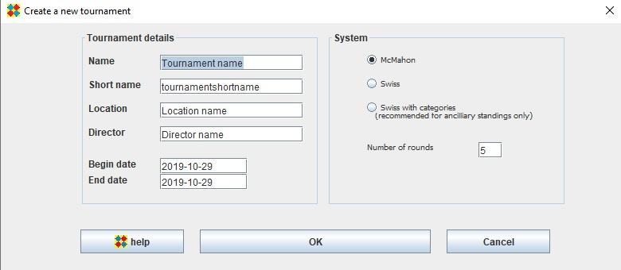

Create a new tournament

McMahon
McMahon System's placement is based on McMahon Score (MMS).
Pairing is made between players with same MMS.
It is the most popular system and is recommended for nearly all kinds of tournaments.
In OpenGotha, by default, games in McMahon System may be played with handicap.
Swiss
Swiss System's placement is based on Number Of Wins (NBW)
Pairing is made between players with same NBW.
It can be considered as a McMahon system where all players start with 0 as common SMMS (Starting MMS).
In OpenGotha, by default, games in Swiss System are played without handicap.
Swiss with categories
Swiss with categories (Swisscat) system divides players in rank-based categories. Pairing is made internally in each category.
Even if you manage your tournament in McMahon system, Swisscat is interesting for ancillary placements, for example if you want to reward the best kyu players, the best 2-digit kyu players, etc.